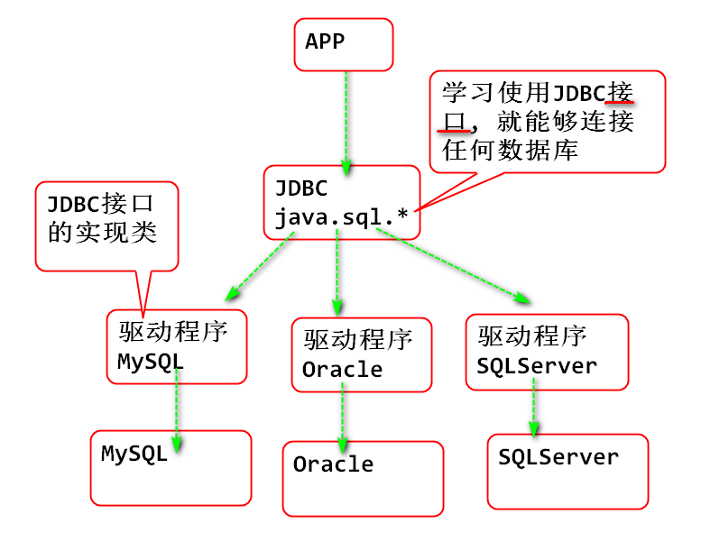

用于限制约定表中的数据完整性, 有效性.
数据库提供了"基础的"完整性,有效性检查.
约束一个列中的值, 符合数据库主键规则要求, 非空且不能重复(唯一). 如果违反就会报错误!
primary key
大多数情况下, 表都使用主键约束, 但有的时候,为提高数据插入性能, 故意不设置主键约束. 比如日志表.
验证主键约束
建表
-- 不添加主键约束
create table t1(
id int,
name varchar(50)
);
-- 添加主键约束
create table t2(
id int,
name varchar(50),
primary key(id)
);
验证
-- 没有主键约束时候
insert into t1 (id, name) values (1, "Tom");
insert into t1 (id, name) values (1, "Jerry");
insert into t1 (id, name) values (null, "Andy");
-- 有主键约束时候
insert into t2 (id, name) values (1, "Tom");
insert into t2 (id, name) values (1, "Jerry");
insert into t2 (id, name) values (null, "Andy");
验证结果: 数据库会检查主键列的规则, 主键不能重复, 主键不能空, 如果违反了主键约束规则, 会出现错误.
验证表中的列值, 不能添加空值.
在设计表的时候为列添加非空约束, 则在插入更改数据时候, 一旦数据为null则报错, 进制添加和修改.
not null
建表
create table t3(
id int primary key,
name varchar(50) not null,
nick varchar(50)
);
测试
-- 正常插入
insert into t3 (id, name, nick)
values (1, '刘国斌', null);
insert into t3 (id, name, nick)
values (2, '范传奇', '范老湿');
-- 错误插入
insert into t3 (id, name, nick)
values (3, null, '范');
限定一个列中的值, 不能重复, 保持唯一. 除了主键以外的其他列保持唯一
unique
建表
-- 设定邮箱地址列是唯一约束, 不能重复
create table t4(
id int primary key,
name varchar(50) not null,
email varchar(100) unique
);
验证: 插入重复的邮箱地址时候出现错误!
为列添加默认值
default '男'
建表
-- 将性别的默认值设置为 男
create table t5(
id int primary key,
name varchar(50) not null,
sex varchar(10) default '男'
);
验证
insert into t5 (id, name) values (1, '范传奇');
insert into t5 (id, name, sex) values (2,'刘国斌','女');
检查表中列取值于另外一个表的主键列
语法:
FOREIGN KEY(外键列) REFERENCES 主键表(主键列)
建表
-- 主键表
create table user(
id int primary key,
name varchar(50) not null
);
-- 外键表
create table trad(
id int primary key,
uid int,
money double,
FOREIGN KEY(uid) REFERENCES user(id)
);
外键列: uid 列的值必须是 user id 的值!
外键特点:
数据库提供的一种高效查询算法! 可以提高海量数据查询效率!
索引可以大大加快大数量的查询效率!
数据量常见索引算法: B+树(B plus Tree)
B+树原理: 1. 数据库数据是连续存储到 磁盘 上的数据块. 每次读写一个数据块, 每个数据块读写 需要 几个ms. 如果是海量数据查询时候, 就需要很多次读写每个数据块, 累计时间很长! 2. B+树 建立两层索引数据块, 索引中包含数据的范围. 只需要读取两层索引块两次, 就能确定目标数据的位置. 查询到结果. 大大减少磁盘IO次数, 提高查询性能! 3. 在最终数据块上还有一次IO, 一共3次磁盘块IO就可以读取到数据, 其性能非常好!!
语法
create index 索引名 on 表名(字段名(?长度));
创建索引
create index idxusername on user(name);
使用索引(自动使用索引!)
select id, name from user where name='Tom';
是指保证一个业务过程的最小单位可靠执行. 避免出现半截情况, 要么都执行, 要么都不执行.
业务过程: 多个动作合成的一个完整不可再分的过程.
4个特点(ACID): 1. A 原子性: 最小不可拆分"业务逻辑单位"!(不是物理级别的不可拆分!) 1. 尽管"业务逻辑单位"中包含多个步骤, 但从业务角度不能拆分执行! 2. C 一致性: 业务单位执行以后(交易发生以后), 与执行之前的总数据一致. 1. 不能多不能少. 3. I 隔离性: 正在发生的业务过程不能被其他业务过程打扰, 业务过程相互隔离. 4. D 持久性: 业务过程发生过以后, 将永久保存, 不能被更改
常见数据库都(自动)支持ACID
Java 数据库连接: 将Java程序连接到数据的桥梁.

使用JDBC
建立与数据库之间的连接
String usr="root";
String pwd="";
// jdbc:mysql://数据库IP:3306/数据库名
String url="jdbc:mysql://localhost:3306/db6";
Connection conn=DriverManger.getConnection(url, usr, pwd);
创建Statement(语句)对象: 用于执行SQL(操作数据库)
DQL select 一般使用 executeQuery
String sql = "create table t_user(id int, name varchar(50))"; Statement st = conn.createStatement(); st.execute(sql); st.close();
关闭连接
conn.close();
完整的建表案例:
public static void main(String[] args)
throws Exception{
//注册数据库驱动
Class.forName("com.mysql.jdbc.Driver");
//建立连接
String usr="root";
String pwd="root";
String url="jdbc:mysql://localhost:3306/db6";
Connection conn =
DriverManager.getConnection(url,usr,pwd);
//测试:
System.out.println(conn);
//创建Statement对象,执行SQL
Statement st = conn.createStatement();
String sql = "create table t_user ("
+ "id int, "
+ "name varchar(100))";
//执行sql语句
st.execute(sql);
st.close();
//关闭连接
conn.close();
}
完整的插入数据案例:
public static void main(String[] args)
throws Exception {
/**
* 利用JDBC执行插入语句
*/
String sql="insert into t_user "
+ "(id, name) "
+ "values (2, '范传奇')";
//注册驱动
Class.forName("com.mysql.jdbc.Driver");
//连接数据库
String url="jdbc:mysql://localhost:3306/db6?characterEncoding=utf8&useUnicode=true&useSSL=false";
String username="root";
String password="root";
Connection conn = DriverManager.getConnection(
url, username, password);
//创建 Statement对象
Statement st = conn.createStatement();
//executeUpdate 返回数据库中更新行数!
int n = st.executeUpdate(sql);
//处理SQL结果
if(n==1) {
System.out.println("插入成功!");
}
//关闭资源和连接
st.close();
conn.close();
}
MySQL JDBC 连接常用参数, 写在连接url上:
关闭ssl加密, useSSL 设置为false
jdbc:mysql://localhost:3306/db6?characterEncoding=utf8&useUnicode=true&useSSL=false
删除案例
public static void main(String[] args)
throws Exception {
/**
* 利用JDBC执行删除语句
*/
String sql="delete from t_user where id=1";
//注册驱动
Class.forName("com.mysql.jdbc.Driver");
//连接数据库
String url="jdbc:mysql://localhost:3306/db6";
String username="root";
String password="root";
Connection conn = DriverManager.getConnection(
url, username, password);
//创建 Statement对象
Statement st = conn.createStatement();
//executeUpdate 返回数据库中更新行数!
int n = st.executeUpdate(sql);
//处理SQL结果
if(n>=1) {
System.out.println("删除成功!");
}else {
System.out.println("删除失败!");
}
//关闭资源和连接
st.close();
conn.close();
}